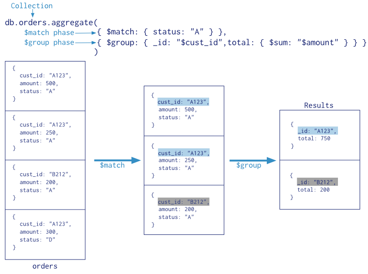

MongoDB Aggregations framework
What is aggregations in MongoDB
MongoDB aggregations allows you to process data records and return computed results.
Aggregations syntax
db.collection.aggregate(pipeline, options)
What is pipeline
Aggregation pipeline is a sequence of stages that will be applied to the collection to obtain the desired result

Pipeline example
db.orders.aggregate([
{ stage1 },
{ stage2 },
{ stage3 },
...
])
Pipeline example
db.orders.aggregate([
{ $stage_name: { args } },
])
Pipeline example
db.orders.aggregate([
{ $match: { status: "A" } },
])
Pipeline example
db.orders.aggregate([
{ $match: { status: "A" } },
{ $group: { _id: "$cust_id", total: { $sum: "$amount" } } }
])
Result
Most commonly used stages
$match
Filters the documents to pass only the documents that match the specified condition(s) to the next pipeline stage.
{ $match: { <query> } }$sort
Sorts all input documents and returns them to the pipeline in sorted order.
{ $sort: { <field1>: <sort order>, <field2>: <sort order> ... } }$project
Passes along the documents with the requested fields to the next stage in the pipeline. The specified fields can be existing fields from the input documents or newly computed fields.
$limit
Limits the number of documents passed to the next stage in the pipeline.
{ $limit: <positive 64-bit integer> }$skip
Skips over the specified number of documents that pass into the stage and passes the remaining documents to the next stage in the pipeline.
{ $skip: <positive 64-bit integer> }$group
Groups input documents by the specified _id expression and for each distinct grouping, outputs a document.
{
$group:
{
_id: <expression>, // Group By Expression
<field1>: { <accumulator1> : <expression1> },
...
}
}$lookup
To each input document, the $lookup stage adds a new array field whose elements are the matching documents from the "joined" collection.
{
$lookup:
{
from: <collection to join>,
localField: <field from the input documents>,
foreignField: <field from the documents of the "from" collection>,
as: <output array field>
}
}Views
A MongoDB view is a queryable object whose contents are defined by an aggregation pipeline on other collections or views. MongoDB does not persist the view contents to disk. A view's content is computed on-demand when a client queries the view.